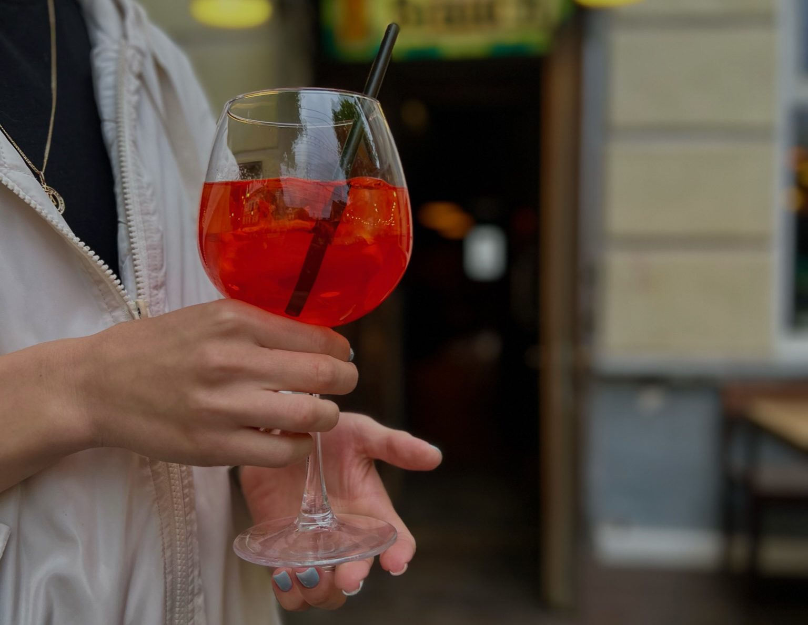
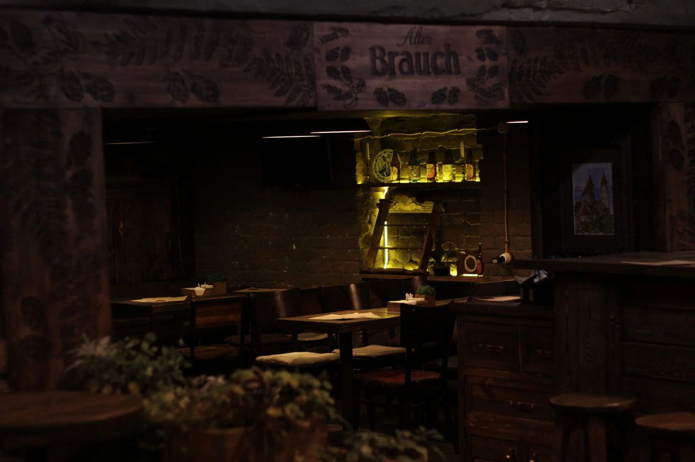
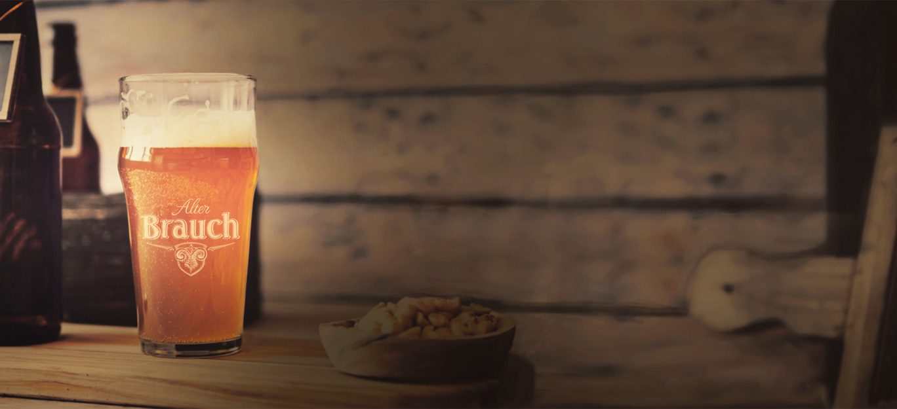

Вам уже есть 18 лет?
Сайт производителя пива, медовухи и сидра содержит информацию об алкогольной продукции.
Сайт производителя пива, медовухи и сидра содержит информацию об алкогольной продукции.
Рязань, ул. Почтовая, 54
пешеходная улица, центр
Восемь кранов с продукцией завода. Цены за 0,5 л по действующему меню.
Из PDF‑меню бара. На новом сайте список кранов лучше вести в JSON и обновлять при смене кеги — так посетитель видит именно то, что налито.

Бургеры на бриоши с котлетой из мраморной говядины, сэндвичи и тосты, сеты «Пиво», «Компания», «Крепкое», «Вино», закуски от гренок с чесночным соусом до вяленой говядины. Фирменные настойки ручной работы, коктейли, безалкогольные шорли и лимонады собственного производства.
Бар ALTER — место для встреч, деловых обедов и вкусного времяпровождения за блюдами от шеф‑повара. Летом — терраса на пешеходной Почтовой.
Меню (PDF)
В баре проходят дегустации новых и сезонных варок завода: Kölsch, Altbier из дубовой бочки, рождественские эли, экзотическая медовуха, лимонады для гостей с детьми. Здесь же — живая музыка и фестиваль «Гуляка» на Почтовой.
Для партнёров пивоварни бар — шоурум: приходите с командой, попробуйте всю линейку и обсудите условия поставок.
Для ресторанов и баров


